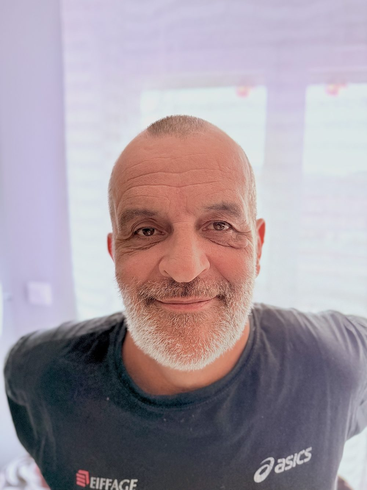

Récupérer
Donner une nouvelle utilité à des métaux existants chaque fois que le projet le permet.
Créations & commandes
82 pièces uniques, forgées à la main par Louis. Explorez la collection par univers ou commencez par ses coups de cœur.
Ce n’est qu’un aperçu
Le savoir-faire
Chaque pièce passe entre les mêmes mains, de la première esquisse jusqu’à la pose.
Comprendre l’usage, le lieu et l’envie avant de tracer les premières lignes.
Le fer devient malléable à la forge, puis prend forme sous le marteau.
Chaque élément est ajusté, soudé puis protégé avec la finition qui lui convient.
La pièce rejoint son lieu, prête à se patiner et à traverser les années.

À propos de Louis
Pendant des années, Louis a été boulanger. Puis il a quitté son métier pour se mettre à son compte et faire de sa passion son travail : il est devenu artisan ferronnier.
Du four à pain à la forge, il a gardé le goût du fait-main et des gestes précis. Dans son atelier de Saint-Saturnin-de-Lenne, il imagine aussi bien des objets du quotidien que des pièces décoratives ou des ouvrages sur mesure. Une partie du métal est récupérée, triée puis remise en œuvre pour lui offrir une seconde histoire.
Chaque projet garde volontairement la trace du geste. Les légères irrégularités ne sont pas des défauts : elles rendent chaque création réellement unique.
Le fer ne ment pas. Il garde la marque du marteau, la trace du feu et l’hésitation de la main.Louis · Artisan ferronnier
Les engagements de l’atelier
Donner une nouvelle utilité à des métaux existants chaque fois que le projet le permet.
Imaginer, former, assembler et finir chaque création directement à l’atelier en Aveyron.
Choisir les assemblages et les finitions en fonction de l’usage réel de chaque pièce.
Questions fréquentes
Oui. Vous pouvez partir d’une idée, d’un croquis, d’une photo d’inspiration ou simplement expliquer votre besoin. Louis vous aidera à préciser la forme, les dimensions et la finition.
Cliquez sur « Réserver cette pièce » dans la galerie, puis laissez vos coordonnées. La pièce apparaîtra ensuite comme réservée et Louis vous recontactera.
Oui, les visites sont possibles sur rendez-vous à Saint-Saturnin-de-Lenne. Un appel ou un e-mail suffit pour convenir d’un moment.
Oui, lorsque la création est prévue pour le jardin ou une façade. La conception et la finition seront adaptées à son exposition et à son environnement.
Venir à l’atelier
L’atelier se trouve à Saint-Saturnin-de-Lenne, entre Sévérac-d’Aveyron et Laissac. Les visites se font simplement sur rendez-vous.
Vous souhaitez réserver : —